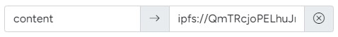

A gateway for serving decentralized websites from .pool domains.
Examples
How to Host a Website
- Get a .pool domain.
- Add your static website to the IPFS network. (full IPFS tutorial)
-
Add a "content" field to your domain with the value set to the IPFS URI of your website. It should look similar to the following:
 ipfs://QmTRcjoPELhuJrZ9TG9WHFYuqtDybQ6tsJUhbwXXSpK89z" width="300" style="border-radius: 0.5rem; margin-top: 0.5rem;"> - View your decentralized website at <your-name>.pool.limo!
How to Redirect to a Website
- Get a .pool domain.
- Set the "url" field of your domain to the URL that you would like it to redirect to.
- Go to <your-name>.pool.limo and it will redirect to the specified URL.
More Guides
How it Works
pool.limo is a completely client-side gateway. This means that when you request a site (ex. name.pool.limo), pool.limo serves your browser a micro-app that resolves the page content and caches it locally.
The entire process runs in your browser, which increases censorship resistance and provides the user with a privacy-respecting browsing experience.
The following is a flow chart of how the client app works:

The Code
View the source code on GitHub.